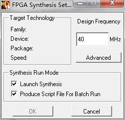

--------------Hardware--------------
1.1 Development Tools & Projects
Altium Designer
Projects listed below are developed with Altium Designer (Version 15.0.7):
- NewUSBBoard -- database/hardware/ADBV2
- NewUSBBoard piggyback -- database/hardware/ADB-PiggybackV2.0
Cadence
Project listed below are developed with Cadence:
- SpirocA board -- database/hardware/HPE-SPIROCA-256-LHCB
- Laser Driver board -- database/hardware/LaserDriver
- PACIFIC board
--------------Firmware--------------
2.1 Development Tools
HDL Designer 2012.1
Download link: HDS_2012_1
Quartus 12.0
Download link Quartus_12_0
2.1 Development Process
Edit Source Code
Download the souce code from https://bitbucket.org/
- Make a new directory D:\NewUSBBoard
- cd D:\NewUSBBoard
- git clone https://lihm09@bitbucket.org/XiaoxueHAN/usbboard_firmware.git firmware
- Set the environment variables
- Run D:\NewUSBBoard\firmware\Setup_Env\SET_ENV_VAR.bat as Administrator.
- Edit source code in the HDL Designer.
Synthesis in HDL Designer
USB_Board_TOP_tb->struct->U_0 is the top file of the project.
USB_Board_TOP_tb->struct->U_1 is the testbench, which can only be used for simulating.

In “FPGA Technology Setup” choose the options:
In "FPGA Synthesis Settings" choose the options: 
Choose U_0 and click “Generate and runs the entires Quartus QIS Synthesis flow” to synthesis the project, then wait for Synthesis completed.
Implementation in Quartus
-
Open Quartus and the project file PEBSino_USB_Board\qis\@u@s@b_@board_@t@o@p_struct\USB_Board_TOP.qpf .
-
Run the command below in the Tcl console, the file will set the type of the device and all the pin planning & constrains.
source USB_Board_TOP.tcl
-
Start compilation.
Program the FPGA
- Use JTAG and *.sof to program the FPGA for preliminary tests.
- Use ISP interface to program the flash
- Use "Convert Programming Files" to generate .jic file to program the flash
(flash device is EPCS64, FPGA device is EP4CE75F23I8L) - The FPGA can also be programed using the software tools through QuickUSB module.
UsehdReadoutTest ... -fto program the FPGA. (More details, tryhdReadoutTest -h)
--------------Software--------------
3.1 Development Tools & Chains
Operation System:
- ubuntu 12.04.3 amd64
Pre-install Software:
- git, g++, qt4, libusb, dkpg, make, gcc, binutils, libx11, libxpm, libxft, libxext, qt4, libusb
sudo apt-get install git dpkg-dev make g++ gcc binutils libx11-dev libxpm-dev libxft-dev \ libxext-dev libqt4-dev libusb-dev libaio.so.1 - FFTW
- download source code and unzip the file to /opt/
- under /opt/fftw-3.3.4, run
./configure - under /opt/fftw-3.3.4, run
./make - under /opt/fftw-3.3.4, run
sudo ./make install
- rootV5.34/32
- download source code and unzip the file to /opt/
- under /opt/root, run
sudo ./configure --enable-qt --with-fftw3-incdir="/opt/fftw-3.3.4/api" --with-fftw3-libdir="/opt/fftw-3.3.4/.libs" - under /opt/root run
sudo make
- qtcreatorV2.8.1
Source Code
-
Download source code from bitbucket
git clone https://lihm09@bitbucket.org/RomanGreim/scifiusbboard.git -
install the QuicUSB Driver
tar -xvf scifiusbboard/support/QuickUsbLibrary_v2.15.2_Linux.tar.gz
cd scifiusbboard/support/QuickUsbLibrary_v2.15.2_Linux
sudo ./install-linux.sh -
Install libiowkit
cd scifiusbboard/utils/lisProgrammer/libiowkit
./configure
make
sudo make install -
Compilation
qmake
make
3.2 Qmake project
- *.pro/*.pri -- qmake project file
- *.h -- header file
- *.cpp -- cpp file
- *.ui -- ui file, edited by qtcreator